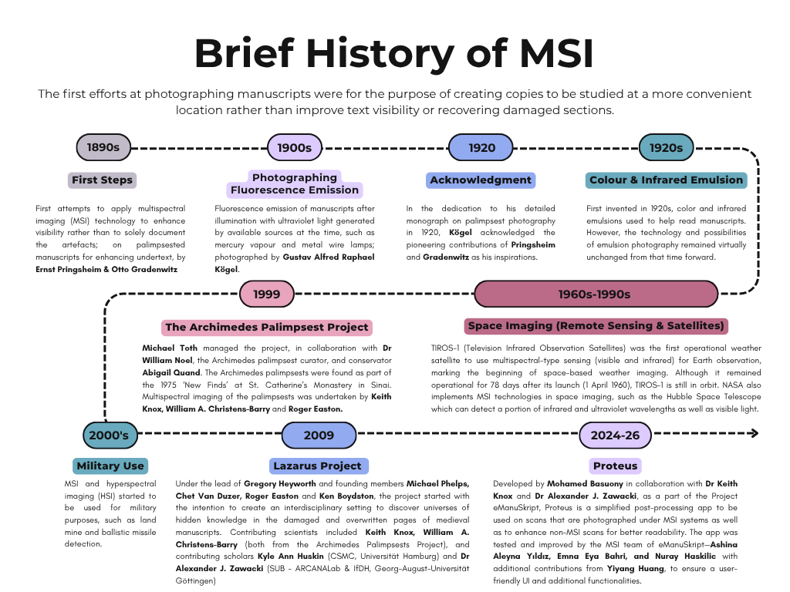

MSI Tutorial I – Introduction

Cod. Ms. Syr. 23, fol.145a, Staats- und Universitätsbibliothek, Göttingen, processed.
MSI is non-invasive and therefore a perfect tool to work with fragile and unique objects, where sampling or invasive analysis would cause damage. The strength of MSI lays in the ability to differentiate materials due to their spectral behavior. This is achieved by post-processing the images with and creating formulas of combination and layering by using complex programs like Hoku or ENVI. These processes enhance the contrast between materials and allow researchers to find complex, new and sometimes lost information.
Today MSI is used in many fields, not only palaeography, codicology, archaeology and art history but also in the natural sciences like medicine. In manuscript studies it is used especially to recover texts and images that have been materially obscured by damage.
HISTORY

MSI and digital Palaeography
Deciphering, analyzing and researching manuscripts and scripts are vital for palaeography and are dependent on the legibility of the source material. If the manuscript shows hints of time and historical use, making it problematic to read, a solution could be MSI. The advantages of MSI lie in the many opportunities and the flexibility it offers for a variety of problems and research questions where a standard photographic technique might fail. MSI works in small steps and allows users to try out a wide range of photographic filters to elicit a better capture of a specific manuscript.
As different materials (of manuscripts)––for example,
are prone to different reactions to light because of their varying compositions but also because of the chemical changes that the substances undergo over time or from other interventions. MSI can help to distinguish and highlight the different-reacting materials to define and delimit them.
Examples of MSI Use in Manuscript Studies
The Science behind MSI
During multispectral imaging an object is illuminated by different external light sources in a darkened room that will change their lights picture by picture (~16). It will be positioned on a table to improve the angle or keep it in place, while the background is darkened. To be as non-invasive as possible it should use LEDs, as they warm less and have little physical contact on the possibly fragile surface. These should cover light ranges between infrared and UV and can be complemented by filters to offer a wider range of light options. The camera can be a monochromatic camera or a normal camera where a new lens has been installed and the blocking filter has been removed in order to work with infrared.
The object is exposed to wavelengths of ~300-900 nm and photographed with great attention to ultraviolet and infrared light, which distinguishes MSI from other techniques and cameras.
Manuscripts components can react in the following ways:
Projects:
To see hands on project that used MSI and their results, have a look at the following websites: